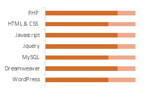

Compassvale Link blk. 273C #11-160, Singapore 543273 • (H) +65-97160134 macapagal.dennis@gmail.com
Experienced Web Developer committed to maintaining cutting edge technical skills and up-to-date industry knowledge. I am a professional, detail-oriented person who is motivated to drive projects from start to finish either independently or as part of a dynamic team.
|  |
|
Web Programmer cum Game Admin08/2012 to 12/2015
Anshe Chung Studios - Philippines
- Manage and edit internal web links of Anshex.com using PHP, HTML, JQuery and CSS. I also provide assistance and support in the in-game environment to ensure its 100% uptime.
- Administer fixes on websites and implemented enhancements that significantly improved website functionality and speed.
- Developed websites with PayPal integration for clients with online business/ e-commerce and ensuring the data transferred are secured.
- Performed testing of websites developed to ensure cross-browser compatibility and web responsiveness on mobile phones.
- Designed strategic plan for component development practices to support future projects.
- Projects: Anshex.com * blueridgeshuttles.com * pattiowensart.com
PHP Developer 01/2012 to 07/2012
SystematicData Solution - Philippines
- Back up files from web sites to local directories for instant recovery in case of problems.
- Design and implement web site security measures such as data encryption using PHP pre-defined functions.
- Recommend and implement performance improvements of website.
Helpdesk Specialist06/2011 to 12/2011
NCS Pte Ltd. - Singapore
- Log tickets in Remedy for IT issues reported by users via phone call or via email.
- Provides technical support for supported applications. It includes performance of 1st level troubleshooting for software and hardware issues supported by MOE.
- Assist to unlock and reset login accounts of applications used within the school.
- Properly escalate unresolved queries to the next level of support
- Provided documentation on start-up, shut down and first level troubleshooting of processes to help desk staff.
Web Programmer05/2009 to 04/2011
International Business Information Solutions - Philippines
- Responsible with the development of static and dynamic websites and web applications using authoring tools, content creation tools and management tools.
- Create and specify architectural and technical parameters and analyse user needs to determine technical requirements.
- Write, design, or edit web page content, or direct others to produce content.
- Perform direct website updates and upgrades.
- In charge with the general maintenance of website databases. Ensure website cross-browser compatibility and compliance to web standards
Bachelor of Science: Information Technology, 2009
Angeles University Foundation – Philippines
- Recipient of College Scholarship from 2005-2008
- Top 10% of class in programming subjects (PHP, VB, ASP)
- Program Requirements
Was able to develop a Registration System during my internship. I wrote a program which succeeded in registering WIFI connected devices in the school's vicinity.
- System Design
Conceptualized and designed a web-based examination for students for my thesis project that resulted in faster and easier calculation of test results.
FIN: G5152662M
Availability: Immediately
Expected Salary: 2400-3000 (Negotiable)